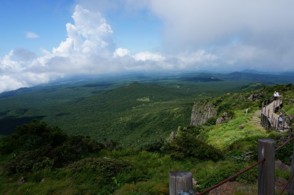
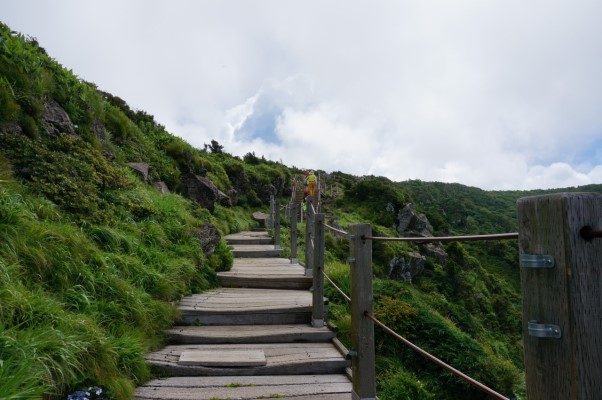
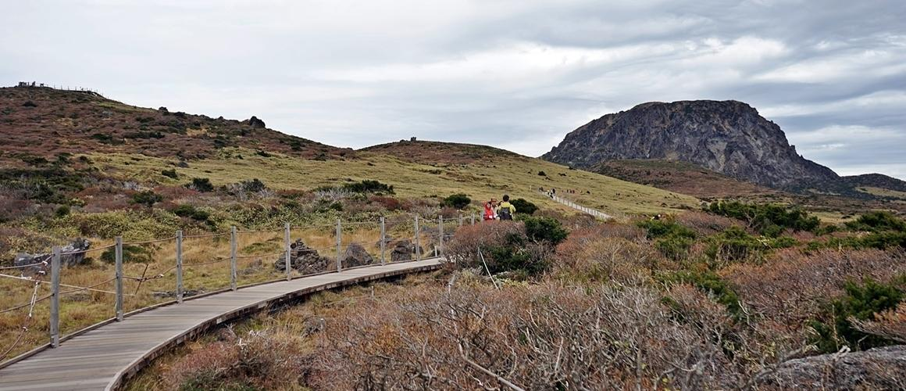

한라산영실코스
#제주도 #한라산영실코스 #맑은물 #좋은경치
insta
map
064-747-9950
영실 등산로는 길이 5.8km, 2시간 30분이 소요되는 코스로, 한라산 코스 중 가장 짧으면서도 가장 아름다운 구간으로 꼽힌다.
차로 등산로 앞, 1280m 고지까지 올라갈수 있다.
백록담 밑에 남벽분기점까지 가는 영실탐방로는 그나마 수월하게 오를 수 있어 초보자들에게도 추천하는 코스다.
백록담까지의 구간은 안전상의 문제로 통제되어 갈 수 없지만,
영실기암과 울창한 숲, 오백나한, ‘돌이 있는 자갈평지’라는 의미의 선작지왓, ‘위에 있는 세 개의 오름’이란 뜻을 가진 윗세오름까지 볼거리는 무궁무진하다.
버스나 택시를 타고 왔다면, 내려갈때는 어리목, 돈내코로 내려가며 다양한 풍경을 감상 할 수 있다.
차로 등산로 앞, 1280m 고지까지 올라갈수 있다.
백록담 밑에 남벽분기점까지 가는 영실탐방로는 그나마 수월하게 오를 수 있어 초보자들에게도 추천하는 코스다.
백록담까지의 구간은 안전상의 문제로 통제되어 갈 수 없지만,
영실기암과 울창한 숲, 오백나한, ‘돌이 있는 자갈평지’라는 의미의 선작지왓, ‘위에 있는 세 개의 오름’이란 뜻을 가진 윗세오름까지 볼거리는 무궁무진하다.
버스나 택시를 타고 왔다면, 내려갈때는 어리목, 돈내코로 내려가며 다양한 풍경을 감상 할 수 있다.
제주특별자치도 서귀포시 영실로 246